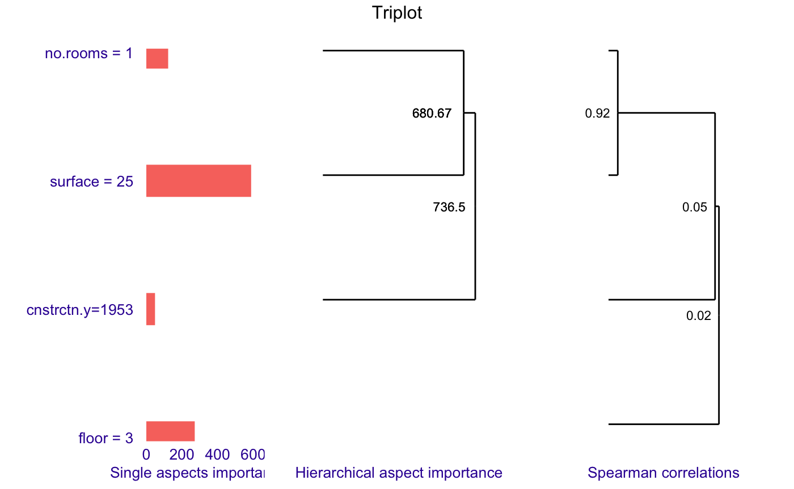

Triplot overview
Katarzyna Pękala
2020-12-11
Source:vignettes/vignette_aspect_importance.Rmd
vignette_aspect_importance.RmdData and logistic regression model for Titanic survival
Vignette presents the predict_aspects() function on the datasets: titanic_imputed and apartments (both are available in the DALEX package). At the beginning, we download titanic_imputed dataset and build logistic regression model.
#> gender age class embarked fare sibsp parch survived
#> 1 male 42 3rd Southampton 7.11 0 0 0
#> 2 male 13 3rd Southampton 20.05 0 2 0
#> 3 male 16 3rd Southampton 20.05 1 1 0
#> 4 female 39 3rd Southampton 20.05 1 1 1
#> 5 female 16 3rd Southampton 7.13 0 0 1
#> 6 male 25 3rd Southampton 7.13 0 0 1
model_titanic_glm <-
glm(survived == 1 ~ class + gender + age + sibsp + parch + fare + embarked,
titanic,
family = "binomial")Preparing additional parameters
Before using predict_aspects() we need to:
- group features of the dataset into aspects,
- choose observation for which we want to explain aspects’ importance.
aspects_titanic <-
list(
wealth = c("class", "fare"),
family = c("sibsp", "parch"),
personal = c("age", "gender"),
embarked = "embarked"
)
passenger <- data.frame(
class = factor(
"3rd",
levels = c("1st", "2nd", "3rd", "deck crew", "engineering crew", "restaurant staff", "victualling crew")),
gender = factor("male", levels = c("female", "male")),
age = 8,
sibsp = 0,
parch = 0,
fare = 18,
embarked = factor(
"Southampton",
levels = c("Belfast", "Cherbourg", "Queenstown", "Southampton")
)
)
passenger#> class gender age sibsp parch fare embarked
#> 1 3rd male 8 0 0 18 Southampton
predict(model_titanic_glm, passenger, type = "response")#> 1
#> 0.1803217Calculating aspect importance (logistic regression)
Now we can call predict_aspects() function and see that features included in wealth (that is class and fare) have the biggest contribution on survival prediction for the passenger. That contribution is of negative type. Personal and family have smaller, positive influence. Aspect embarked with single feature has very small contribution.
library("ggplot2")
library("triplot")
set.seed(123)
titanic_without_target <- titanic[,colnames(titanic) != "survived"]
explain_titanic_glm <- explain(model_titanic_glm,
data = titanic_without_target,
y = titanic$survived == 1,
predict_function = predict,
label = "Logistic Regression",
verbose = FALSE)
titanic_glm_ai <- predict_aspects(explain_titanic_glm,
new_observation = passenger,
variable_groups = aspects_titanic,
N = 1000)
print(titanic_glm_ai, show_features = TRUE)#> variable_groups importance features
#> 2 wealth -0.73927 class, fare
#> 4 personal 0.34750 age, gender
#> 3 family 0.16723 sibsp, parch
#> 5 embarked -0.02766 embarked-1.png)
Random forest model for Titanic survival
Now, we prepare random forest model for the titanic dataset.
library("randomForest")
model_titanic_rf <- randomForest(factor(survived) == 1 ~
gender + age + class + embarked + fare +
sibsp + parch,
data = titanic)
predict(model_titanic_rf, passenger)#> 1
#> 0.5194387Calculating aspect importance (random forest)
After calling predict_aspects() we can see why the survival prediction for the passenger in random forest model was much higher (0.5) than in logistic regression case (0.18).
In this example personal features (age and gender) have the biggest positive influence. Aspects wealth (class, fare) and embarked have both much smaller contribution and those are negative ones. Aspect family has very small influence on the prediction.
explain_titanic_rf <- explain(model_titanic_rf,
data = titanic_without_target,
y = titanic$survived == 1,
predict_function = predict,
label = "Random Forest",
verbose = FALSE)
titanic_rf_ai <- predict_aspects(explain_titanic_rf,
new_observation = passenger,
variable_groups = aspects_titanic,
N = 1000)
print(titanic_rf_ai, show_features = TRUE)#> variable_groups importance features
#> 4 personal 0.211406 age, gender
#> 2 wealth -0.071676 class, fare
#> 5 embarked -0.044127 embarked
#> 3 family 0.002889 sibsp, parch-1.png)
Using lasso in predict_aspects() function
Function predict_aspects() can calculate coefficients (that is aspects’ importance) by using either linear regression or lasso regression. Using lasso, we can control how many nonzero coefficients (nonzero aspects importance values) are present in the final explanation.
To use predict_aspects() with lasso, we have to provide n_var parameter, which declares how many aspects importance nonzero values we would like to get in predict_aspects() results.
For this example, we use titanic_imputed dataset again and random forest model. With the help of lasso technique, we would like to check the importance of variables’ aspects, while controlling that two of them should be equal to 0. Therefore we call predict_aspects() with n_var parameter set to 2.
titanic_rf_ai_lasso <- predict_aspects(explain_titanic_rf,
new_observation = passenger,
variable_groups = aspects_titanic,
N = 1000,
n_var = 2)
print(titanic_rf_ai_lasso, show_features = TRUE)#> variable_groups importance features
#> 4 personal 0.23209 age, gender
#> 2 wealth -0.04034 class, fare
#> 3 family 0.00000 sibsp, parch
#> 5 embarked 0.00000 embarkedAutomated grouping features into aspects
In examples described above, we had to manually group features into aspects. On apartments dataset, we will test the function that automatically groups features for us (grouping is based on the features correlation). Function only works on numeric variables.
We import apartments from DALEX package and choose columns with numeric features. Then we fit linear model to the data and choose observation to be explained. Target variable is m2.price.
library(DALEX)
data("apartments")
apartments_num <- apartments[,unlist(lapply(apartments, is.numeric))] #excluding non numeric features
head(apartments_num)#> m2.price construction.year surface floor no.rooms
#> 1 5897 1953 25 3 1
#> 2 1818 1992 143 9 5
#> 3 3643 1937 56 1 2
#> 4 3517 1995 93 7 3
#> 5 3013 1992 144 6 5
#> 6 5795 1926 61 6 2
new_observation_apartments <- apartments_num[6,]
model_apartments <- lm(m2.price ~ ., data = apartments_num)
new_observation_apartments#> m2.price construction.year surface floor no.rooms
#> 6 5795 1926 61 6 2
predict(model_apartments, new_observation_apartments) #> 6
#> 3817.634We run group_variables() function with cut off level set on 0.6. As a result, we get a list of variables groups (aspects) where absolute value of features’ pairwise correlation is at least at 0.6.
Afterwards, we call print predict_aspects() results with parameter show_cor = TRUE, to check how features are grouped into aspects, what is minimal value of pairwise correlation in each group and to check whether any pair of features is negatively correlated (neg) or not (pos).
apartments_no_target <- apartments_num[,-1] #excluding target variable
aspects_apartments <- group_variables(apartments_no_target, 0.6)
explain_apartments_lm <- explain(model_apartments,
data = apartments_no_target,
y = apartments_num$m2.price,
predict_function = predict,
label = "Linear Model",
verbose = FALSE)
apartments_ai <- predict_aspects(x = explain_apartments_lm,
new_observation = new_observation_apartments[-1],
variable_groups = aspects_apartments,
N = 1000)
print(apartments_ai, show_features = TRUE, show_cor = TRUE)#> variable_groups importance features min_cor sign
#> 3 aspect.group2 304.97 surface, no.rooms 0.9174349 pos
#> 4 aspect.group3 17.62 floor NA
#> 2 aspect.group1 -17.26 construction.year NAHierarchical aspects importance
Triplot is one more tool that allows us to better understand the inner workings a of black box model. It illustrates, in one place:
- the importance of every single feature,
- hierarchical aspects importance (explained below),
- order of grouping features into aspects as in
group_variables().
Hierarchical aspects importance allows us to check the values of aspects importance for the different levels of variables grouping. Method starts with looking at the aspect importance where every aspect has one, single variable. Afterwards, it iteratively creates bigger aspects by merging the ones with the highest level of absolute correlation into one aspect and calculating it’s contribution to the prediction. It should be noted that similarly to group_variables(), calculate_triplot() works for the datasets with only numerical variables.
Looking at the triplot, we can observe that for a given observation:
- surface have biggest impact on prediction,
- every feature has positive influence on prediction,
- surface and number of rooms are, unsurprisingly, strongly correlated and together they have strong influence on the prediction,
set.seed(123)
apartments_tri <- predict_triplot(explain_apartments_lm,
new_observation = new_observation_apartments[-1],
N = 1000,
clust_method = "complete")
plot(apartments_tri,
absolute_value = FALSE,
cumulative_max = FALSE,
add_importance_labels = FALSE,
abbrev_labels = 15,
add_last_group = TRUE,
margin_mid = 0)
Session info
#> R version 4.0.3 (2020-10-10)
#> Platform: x86_64-apple-darwin17.0 (64-bit)
#> Running under: macOS Catalina 10.15.7
#>
#> Matrix products: default
#> BLAS: /Library/Frameworks/R.framework/Versions/4.0/Resources/lib/libRblas.dylib
#> LAPACK: /Library/Frameworks/R.framework/Versions/4.0/Resources/lib/libRlapack.dylib
#>
#> locale:
#> [1] en_US.UTF-8/en_US.UTF-8/en_US.UTF-8/C/en_US.UTF-8/en_US.UTF-8
#>
#> attached base packages:
#> [1] stats graphics grDevices utils datasets methods base
#>
#> other attached packages:
#> [1] randomForest_4.6-14 triplot_1.3.1 ggplot2_3.3.2
#> [4] DALEX_2.0.1
#>
#> loaded via a namespace (and not attached):
#> [1] compiler_4.0.3 pillar_1.4.7 iterators_1.0.13 tools_4.0.3
#> [5] digest_0.6.27 lattice_0.20-41 evaluate_0.14 memoise_1.1.0
#> [9] lifecycle_0.2.0 tibble_3.0.4 gtable_0.3.0 pkgconfig_2.0.3
#> [13] rlang_0.4.9 foreach_1.5.1 Matrix_1.2-18 patchwork_1.1.0
#> [17] yaml_2.2.1 pkgdown_1.6.1.9000 xfun_0.19 ggdendro_0.1.22
#> [21] withr_2.3.0 stringr_1.4.0 knitr_1.30 desc_1.2.0
#> [25] fs_1.5.0 vctrs_0.3.5 systemfonts_0.3.2 glmnet_4.0-2
#> [29] rprojroot_2.0.2 grid_4.0.3 glue_1.4.2 R6_2.5.0
#> [33] textshaping_0.2.1 survival_3.2-7 rmarkdown_2.5 farver_2.0.3
#> [37] magrittr_2.0.1 splines_4.0.3 codetools_0.2-16 scales_1.1.1
#> [41] htmltools_0.5.0 ellipsis_0.3.1 MASS_7.3-53 assertthat_0.2.1
#> [45] shape_1.4.5 colorspace_2.0-0 labeling_0.4.2 ragg_0.4.0
#> [49] stringi_1.5.3 munsell_0.5.0 crayon_1.3.4